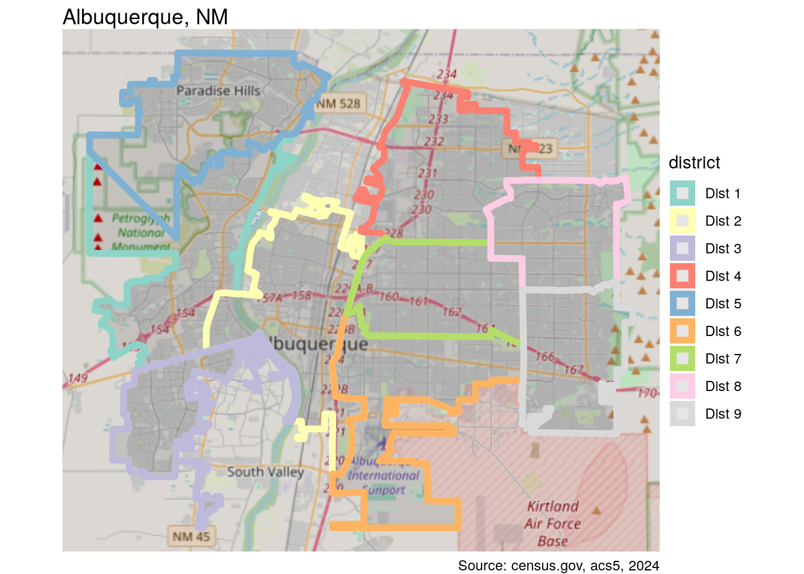
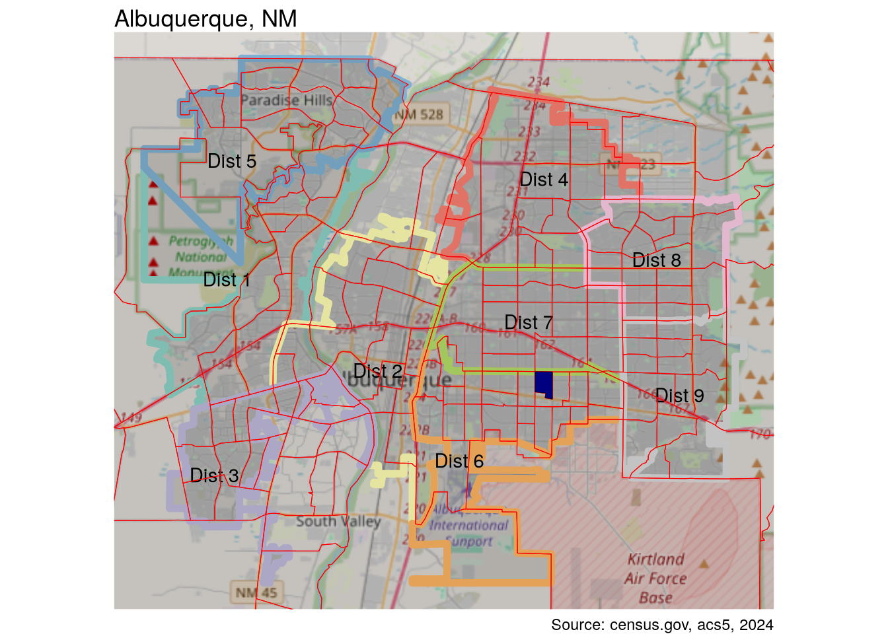
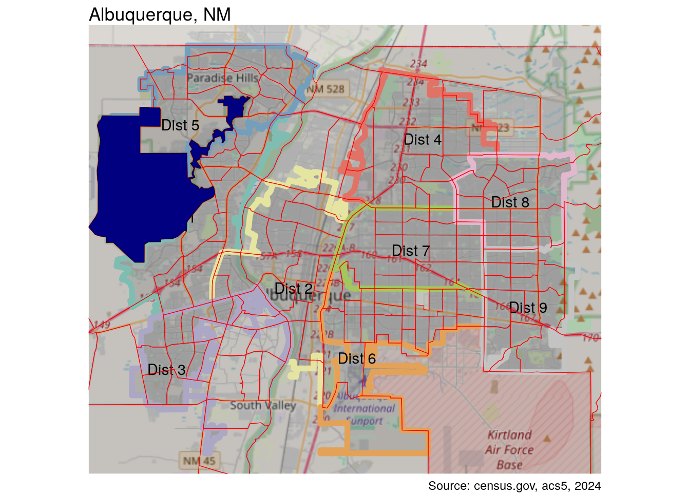
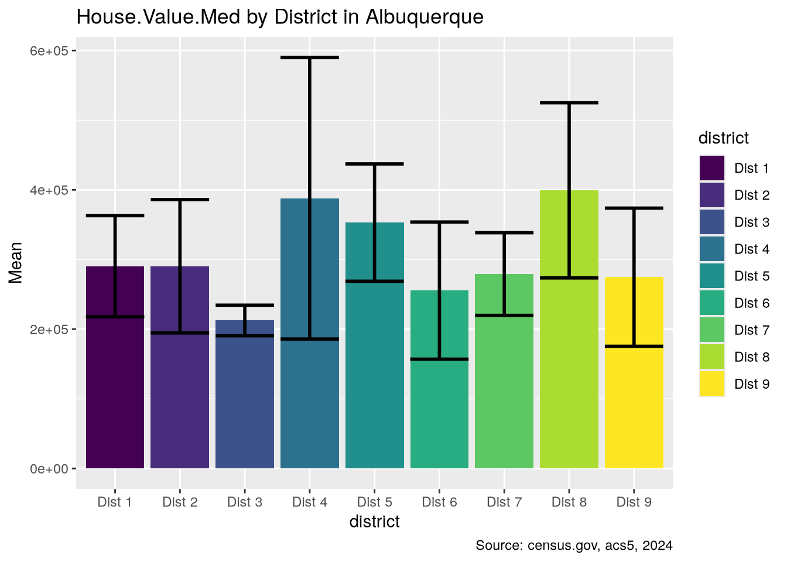
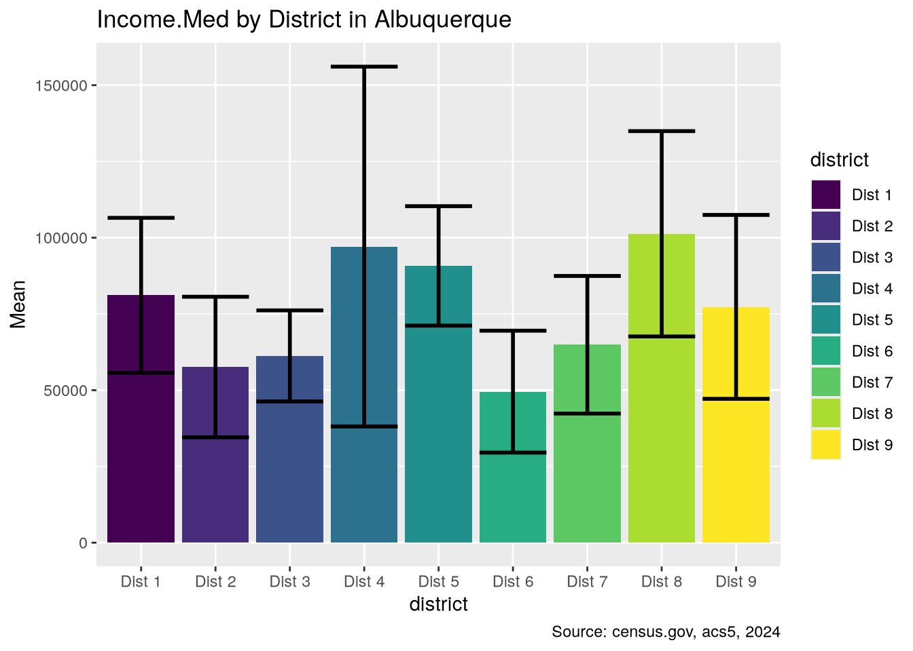
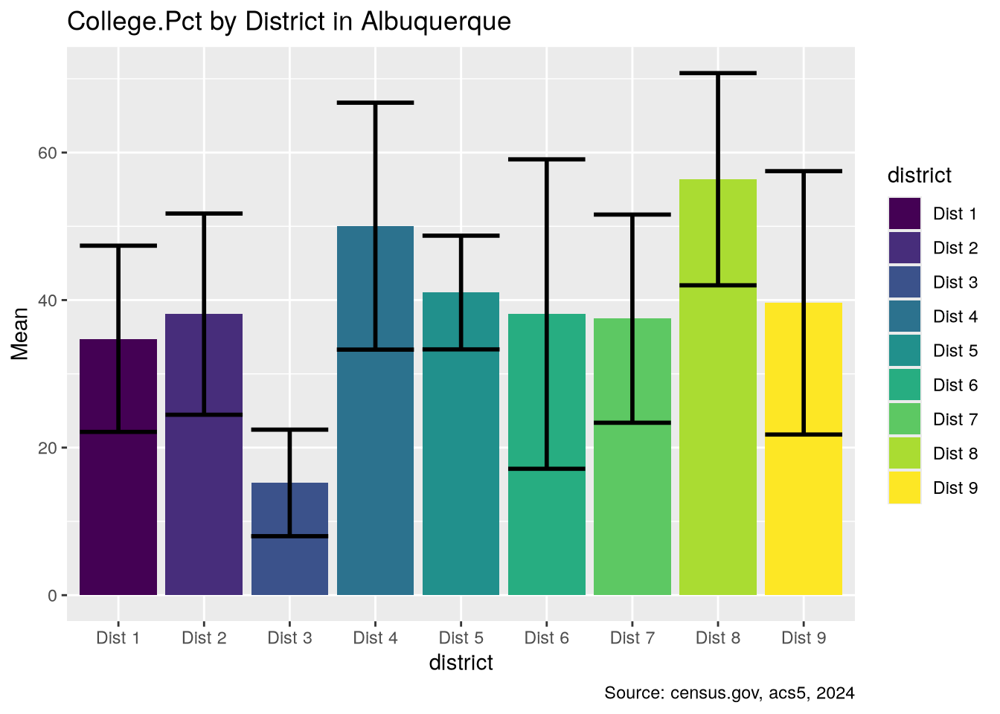
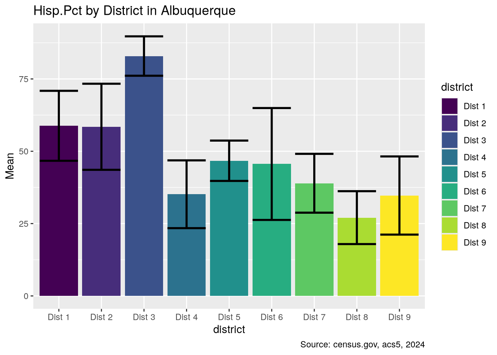

options(paged.print = FALSE,
tigris_use_cache = TRUE)
libraries <- list(
"sf", "collapse", "ggplot2", "magrittr", "dplyr",
"zeallot", "purrr", "patchwork"
)
invisible(lapply(libraries, library, character.only = TRUE))
microbenchmark <- microbenchmark::microbenchmark
glue <- glue::glue
annotation_map_tile <- ggspatial::annotation_map_tile
set_units <- units::set_units
st_remove_holes <- nngeo::st_remove_holes
get_acs <- tidycensus::get_acs
rownames_to_columns <- tibble::rownames_to_column
year <- 2024
crs <- 6528
caption <- glue("Source: census.gov, acs5, {year}")Introduction
This article follows on from an earlier article in which I used data from the US Census Bureau to see how age, race, and education vary between city council districts in Albuquerque, New Mexico. In some cases, the variations appeared striking. Now I would like to apply some formal testing to see if this impression of variance is backed up statistically. As in the prior article, I will use data from the US Census American Community Survey. In addition to the demographic variables of education and race, I will add a number of economic indicators such as income levels, housing values, and inequality measurements. Before being able to run the tests, and eventual models, a significant amount of data wrangling will be necessary in order to get the data in an appropriate form,with appropriate variables, from the raw data.
Having obtained the data, I will need clean out bad data, fill in missing values, engineer new variables of interest, and divide the spatial dataset by council districts. I will then explore correlation and spatial autocorrelation between the chosen variables. Next I will perform an analysis of variance, but since almost none of the variables will turn out to be normally distributed, some more work will be necessary to transform the data. I will also need to address issues of homogeneity of variance among the districts. Finally, I will do some regression modeling. Since my primary target variable is the county districts, this will require multinomial logistic regression models.
This would be far too much for one article, so I will split the excercise into four parts. The current article will be concerned with preparing the data. I have another purpose here, which is to highlight how data analysis and transformation can be significantly sped up by using the collapse package instead of the ubiquitous dplyr library. dplyr is without doubt wonderfully expressive and, as a key part of the popular tidyverse, sets a syntactical approach which has been widely adopted, and justifiably so. While the syntactic standard is excellent, it is not, unfortunately, a particularly fast library. collapse, on the other hand, while embracing the syntactical conventions of dplyr (unlike data.table), focuses on speed. It is orders of magitude faster, and it is even much faster than data.table. Written in C/C++, it has “fast” versions of many commonly-used dplyr functions, simply with a prepended “f”, eg. fmutate rather than mutate. It provides many new fast statistical functions, transformations, and convenience functions. Throughout, I will show speed comparisons between dplyr and collapse using the microbenchmark package.
Loading libraries
I will begin by loading the required libraries and setting some constants. This project will require functions dozens of libraries, but in most cases only one or two functions from any given library is needed. Rather than loading entire packages, I will load the primary libraries in full, and then the single functions from the other packages. This approach also has the virtue of declaring all package dependencies at the beginning, an excellent programming practice.
Council District Geometries
I’ll start by preparing the council district spatial dataset. I did the same in the last article, but this time I’ll use collapse functions.
council_dists <- st_read("../data/BC_CityCouncil/ABQ_CityCouncils.shp") %>%
fselect(district = DISTRICTNU) %>%
ftransform(district = paste("Dist", district)) %>%
roworder(district) %>%
st_remove_holes %>%
st_cast("MULTIPOLYGON")
los_ranchos <- st_read("../data/LosRanchos/LosRanchos.shp") %>%
fselect(district = Name)
council_dists <-
rowbind(council_dists, los_ranchos) %>%
st_transform(crs)fselect works just like select. collapse also has an fmutate function which is the fast version of mutate, and which I could have used here. When no grouping is required, however, ftransform is even faster than fmutate because it evaluates all arguments simultaneously. roworder replaces arrange, and rowbind replaces rbind. Finally, qF is used instead of factor. collapse offers a number of functions for fast conversion between data types, such as qTBL to convert to a tibble, qM to convert to a matrix, and qDF to convert to a data frame. In general, the more primitive the type, the faster the processing. When spatial information is unnecessary, I will use data frames for processing, converting back to spatial data frames for mapping and spatial analysis.
Note that, after removing the “holes”, the geometries of council_dists will be a mix of POLYGONSs and MULTIPOLYGONs. This will generate errors in various future operations, so I will use st_cast to ensure consistency.
My study area is a rectangular region that is a bit smaller than the actual city limits. This will cut out some outlying areas. Also, as mentioned before, there are many patches of unincorporated county in the geographic area. Above I used st_remove_holes to include enclaves of unincorporated county in the respective districts. For the rest, I will explicitly label these areas as “Unincorporated”, obtaining the geometries for the region by taking the st_difference between the rectangular bounding box of the council_dists and the union of the council district geometries.
dist_box = c(xmin = 452000, xmax = 479833,
ymin = 443500, ymax = 467858)
council_dists %<>%
st_crop(dist_box) %>%
st_cast("MULTIPOLYGON")
difference_sfc <-
st_difference(
st_as_sfc(st_bbox(council_dists)),
st_union(council_dists$geometry)
)
difference_sf <-
st_sf(data.frame(district = "Unincorporated"),
geometry = difference_sfc
)
council_dists <- rowbind(difference_sf, council_dists)I have used %<>%, a lesser-used function from magrittr, which replaces the tedious yet ubiquitous idiom data <- data %>% with the simpler and shorter data %<>%. It is similar to modifiying by reference. I have also, again, needed to recast the geometries after the cropping operation. Now I will create a base plot for the rest of the study which shows the district boundaries.
dist_plot <- function(df = council_dists, labels = TRUE) {
p <- ggplot(df) +
annotation_map_tile(
type = "osm", zoomin = -1, cachedir = "~/.cache/maps/"
) +
geom_sf(aes(color = district), linewidth = 2) +
scale_color_brewer(palette = "Set3") +
labs(title = "Albuquerque, NM",caption = caption) +
theme_void()
if (labels) {
p <- p + geom_sf_text(aes(label = district)) + guides(color = "none")
}
p
}
council_dists %<>%
fsubset(district %!in% c("Los Ranchos", "Unincorporated"))
dist_plot(labels = FALSE)
I will save the council district definitions for future use.
st_write(council_dists, "../data/district_variance.gpkg",
layer = "council_dists", append = F)Census Data
Fetching
The get_acs() function from tidycensus obtains information from the American Community Survey tables published by the US Census Department. By supplying a named vector to the variables argument, the columns of the returned data table will be automatically renamed. Setting geometry = TRUE returns an sf object, and output = "wide" gives a column for each variable. After obtaining the data, I will remove the margin of error columns, remove the trailing “E” from the remaining column names, and transform the geometry to an appropriate coordinate reference system. get_vars is a more flexible version of fselect. As you can see, it can select by either index or name, and can also use regular expressions for column selection.
vars_census <- c(
House.Value.Med = "B25077_001",
Housing.Units = "B25001_001",
Renter.Occupied = "B25003_003",
Vacant = "B25002_003",
Income.Med = "DP03_0062",
Gini = "B19083_001",
Rent.Med = "B25031_001",
Foreign.Born.Pct = "DP02_0094P",
Hisp.Pct = "DP05_0090P",
In.Poverty = "B17001A_002",
Age.Med = "B01002_001",
College.Pct = "DP02_0068P",
Population = "B01003_001"
)
bern_data <- get_acs(
geography = "tract",
state = "NM",
county = "Bernalillo",
variables = vars_census,
output = "wide",
year = year,
geometry = TRUE,
cache_table = TRUE
) %>%
get_vars(c("E$", "GEOID"), regex = TRUE) %>%
get_vars(-2) %>%
frename(\(x) sub("E$", "", x)) %>%
st_transform(crs)Cleaning
Let’s take a look at the data before splitting it between districts. I’ll use qsu, collapse’s fast version of summary.
qsu(bern_data) N Mean SD Min Max
GEOID 176 - - - -
House.Value.Med 166 303775.904 126616.382 28700 869000
Housing.Units 176 1720.1477 685.5887 0 3814
Renter.Occupied 176 575.233 470.4958 0 2423
Vacant 176 98.017 87.0864 0 403
Gini 173 0.4183 0.0737 0.068 0.5929
Rent.Med 167 1306.5868 461.5261 425 3501
In.Poverty 176 235.892 207.3682 0 1161
Age.Med 174 40.9632 8.4063 19.8 66.3
Population 176 3829.1477 1636.8032 0 11669
Income.Med 172 75168.8779 34757.922 19780 250001
Foreign.Born.Pct 174 10.1443 7.5109 0 39.2
Hisp.Pct 174 47.4213 21.3292 0 93.2
College.Pct 174 37.681 18.8133 0 84.8It is worth noting that the geometry column does not appear in this summary. For the most part, collapse ignores the fact that the data is an sf object.
There is some clean-up to do. There are some missing values to explore, and oddities like areas where the population total is 0. I’ll deal with the zero-population areas first. fsubset here is like dplyr’s filter. collapse also provides a fast versions of the logical operators ==, !=, and %in% (%==%, %!=%, %iin%).
bern_data %>%
fsubset(Population %==% 0)Simple feature collection with 2 features and 14 fields
Geometry type: MULTIPOLYGON
Dimension: XY
Bounding box: xmin: 413766.6 ymin: 429075.1 xmax: 509166.4 ymax: 468330.2
Projected CRS: NAD83(2011) / New Mexico Central
# A tibble: 2 × 15
GEOID House.Value.Med Housing.Units Renter.Occupied Vacant Gini Rent.Med
<chr> <dbl> <dbl> <dbl> <dbl> <dbl> <dbl>
1 350019408… NA 0 0 0 NA NA
2 350019803… NA 0 0 0 NA NA
# ℹ 8 more variables: In.Poverty <dbl>, Age.Med <dbl>, Population <dbl>,
# Income.Med <dbl>, Foreign.Born.Pct <dbl>, Hisp.Pct <dbl>,
# College.Pct <dbl>, geometry <MULTIPOLYGON [m]>It is worth comparing this with the dyplr equivalent.
microbenchmark(
dp = bern_data %>% filter(Population == 0),
co = bern_data %>% fsubset(Population %==% 0)
)Unit: microseconds
expr min lq mean median uq max neval cld
dp 731.505 800.4565 980.19689 851.4435 1157.7950 1781.813 100 a
co 7.556 9.8570 17.66332 14.2310 21.6835 54.672 100 bThe collapse version of this very common operation is over 50 times faster than dplyr’s! Now, let’s see where the tract is.
dist_plot() +
geom_sf(data = bern_data, color = "red") +
geom_sf(data = fsubset(bern_data, Population %==% 0),
fill = "navy") +
lims(x = dist_box[1:2], y = dist_box[3:4])Zoom: 11
This tract is the state fairgrounds. The other must be outside the study area. I’ll remove both.
bern_data %<>% fsubset(Population %!=% 0)The population of 16 is somewhat suspicious.
dist_plot() +
geom_sf(data = bern_data, color = "red") +
geom_sf(
data = fsubset(bern_data, Population < 20),
fill = "navy"
) +
lims(x = dist_box[1:2], y = dist_box[3:4])Zoom: 11
This is the Petroglyph National Monument, and the 16 people must be park rangers. I’ll remove this as well.
bern_data %<>% fsubset(Population > 20)This only leaves the missing values. Let’s take a closer look. keep is from the purrr library, allowing functional selection of columns.
na_cols <- st_drop_geometry(bern_data) %>%
keep(~anyNA(.x)) %>% colnames
bern_data %>%
st_drop_geometry %>%
fsubset(missing_cases(bern_data)) %>%
gv(na_cols) # A tibble: 12 × 4
House.Value.Med Gini Rent.Med Income.Med
<dbl> <dbl> <dbl> <dbl>
1 206500 0.592 NA 50329
2 NA 0.4 867 30810
3 NA 0.476 861 27168
4 NA 0.419 956 33875
5 NA 0.453 942 37088
6 869000 0.357 NA 250001
7 225100 0.403 NA 87645
8 NA 0.373 1095 48333
9 271500 0.394 NA 72926
10 98900 0.306 NA 46783
11 NA 0.333 1766 83774
12 NA NA NA NAAs you might guess missing_cases is from collapse, and is the fast, though opposite, of complete.cases. complete.cases, however, cannot be used on an sf object without dropping the geometry, while missing_cases can, and it is nearly 100 times faster than the dplyr idiom. (One important aspect of collapse is that it preserves attributes, and is generally agnositc as to the class of a table, although this is not entirely seamless for sf objects.) collapse also provides “short-hand” versions of some functions. In this case gv is short for get_vars.
microbenchmark(
dp = bern_data %>%
filter(if_any(everything(), is.na)),
co = bern_data %>%
fsubset(missing_cases(bern_data))
)Unit: microseconds
expr min lq mean median uq max neval cld
dp 1762.084 1885.564 2065.48855 1966.330 2141.372 3564.045 100 a
co 12.552 15.039 25.47022 26.276 31.268 94.920 100 bcollapse is nearly 100 times faster.
These observations do seem worth preserving. I will fill in the missing values based on the median values for each variable, mean in the case of Gini, but I would like these values to be based on the averages for the specific district, rather than an overall averages, so I will go ahead and split the data into districts at this point.
I want to remember the rows with missing values so I can check that they get filled in. I can’t just use row indices, since these will change after splitting into districts. Instead I’ll grab the GEOIDs. I am also using shorthand verbs provided by collapse: gv, short for get_vars, and ss, short for fsubset.
missing <- (bern_data %>%
st_drop_geometry() %>%
ss(missing_cases(bern_data)))[["GEOID"]]I will preserve the county data for future use.
st_write(bern_data, "../data/district_variance.gpkg",
layer = "bern_data", append = F)The Albuquerque District Dataset
Splitting the data requires intersecting the county census data with the geometries from the district dataset. Any given tract’s boundaries may cross two or even three districts. Since some of the variables are extensive, representing counts, these values will need to be apportioned based on the percentage area represented by each subsection. I’ll calculate the initial area of each tract, then the areas of each newly-created sub-section, which will then allow me to divide each tract’s data by the percentage area lying in the newly created areas. I’ll also make district a factor.
abq_data <- bern_data %>%
ftransform(area = st_area(.)) %>%
st_intersection(council_dists) %>%
ftransform(area_pct = as.numeric(st_area(.) / area)) %>%
fsubset(district %!iin% c("Los Ranchos", "Unincorporated")) %>%
ftransform(district = qF(district))Variable Engineering
I want to create some new variables from the raw data. First, I will turn the raw poverty numbers into a percentage of each tract’s population. I’ll also create housing and population density variables based on tract area, and vacancy and renter occupied variables that are a percentage of available housing units in each tract.
ftransformv takes a vector of column identifiers, in this case column names, and applies a function to them, in this case an anonymous function, using the FUN argument. ftransform is similar to fmutate, although it has some different rules, such as the variables being non-recursive. I’m also taking advantage of some quick column arithmetic. %c/% is shorthand for column division. collapse provides a range of such functions for row and column math, eg. %c*%. Note also that ftransform allows you to remove colums easily with the syntax variable = NULL.
Finally, I will use st_cast to ensure consistent geometries, since, after intersection operation, there are likely to be a mix of POLYGONs and MULTIPOLYGONs, which will cause trouble down the line for the spatial analyses.
ext_vars <- c("Population", "Housing.Units", "Renter.Occupied", "Vacant", "In.Poverty")
abq_data %<>%
ftransformv(
ext_vars,
FUN = function(x) round(x * abq_data$area_pct, 0)
) %>%
ftransform(
In.Poverty.Pct = In.Poverty %c/% Population * 100,
Population.Density = Population %c/% area %>%
set_units("1/km^2") %>% as.numeric,
Vacant.Pct = Vacant %c/% Housing.Units * 100,
Renter.Occupied.Pct = Renter.Occupied %c/% Housing.Units * 100,
Housing.Density = Housing.Units %c/% area %>%
set_units("1/km^2") %>% as.numeric,
In.Poverty = NULL, Vacant = NULL, Housing.Units = NULL,
Renter.Occupied = NULL, area = NULL
) %>%
colorder(district, pos = "front") %>%
st_cast("MULTIPOLYGON")Now I want to fill in the missing values with grouped averages. I’ll start by creating a grouping object. I could simply provide a column, but it is somewhat faster to do it this way if you plan to re-use the same grouping multiple times. This is similar, to the ftransform above, but the syntax is a little more complicated since I need to supply the g (group) and TRA (transformation) arguments. There are ten different possible values for TRA, including “fill” for replacing all variables, “-” for subtracting (centering) and “/” for dividing (scaling). In this case I am simply replacing the NA values.
I am modifying the data by reference here by using settransform rather than transform. A number of collapse’s functions provide this alternative.
dist_grp <- GRP(abq_data$district)
settransform(abq_data,
fmean(list(
In.Poverty.Pct = In.Poverty.Pct,
Vacant.Pct = Vacant.Pct,
Renter.Occupied.Pct = Renter.Occupied.Pct),
g = dist_grp, TRA = "replace_NA"))
settransform(abq_data,
fmedian(list(
House.Value.Med = House.Value.Med,
Rent.Med = Rent.Med, Income.Med = Income.Med),
g = dist_grp, TRA = "replace_NA"))
abq_data %>%
st_drop_geometry %>%
fsubset(GEOID %iin% missing) %>%
gv(na_cols)# A tibble: 16 × 4
House.Value.Med Gini Rent.Med Income.Med
<dbl> <dbl> <dbl> <dbl>
1 241200 0.419 956 33875
2 225100 0.403 1094 87645
3 219100 0.373 1095 48333
4 357700 0.453 942 37088
5 869000 0.357 1335 250001
6 271500 0.394 1470. 72926
7 98900 0.306 1470. 46783
8 206500 0.592 920. 50329
9 227650 0.4 867 30810
10 227650 0.476 861 27168
11 227650 0.333 1766 83774
12 206500 0.592 1138 50329
13 248600 0.476 861 27168
14 248600 0.453 942 37088
15 206500 0.592 1186 50329
16 251700 0.333 1766 83774More Cleaning
All missing values have been filled in. However, there is a new problem:
qsu(abq_data) N Mean SD Min Max
district 256 - - - -
GEOID 256 - - - -
House.Value.Med 256 295625.195 116039.083 28700 869000
Gini 256 0.4266 0.07 0.2313 0.5929
Rent.Med 256 1279.9629 434.2917 632 3501
Age.Med 256 40.3887 8.2295 19.8 66.3
Population 256 2068.0508 2095.164 0 11152
Income.Med 256 71624.9805 32590.6795 19780 250001
Foreign.Born.Pct 256 10.4441 7.5116 0 39.2
Hisp.Pct 256 48.0937 20.604 10.6 93.2
College.Pct 256 37.8488 18.01 2.8 84.8
area_pct 256 0.5264 0.4621 0 1
In.Poverty.Pct 256 5.528 5.0507 0 33.3333
Population.Density 256 1008.8517 1115.1273 0 5955.4623
Vacant.Pct 256 4.7517 4.2574 0 20.2716
Renter.Occupied.Pct 256 34.1215 23.0123 0 100
Housing.Density 256 476.4714 535.5719 0 2575.2589The split data now contains new areas with a population of 0. As a result of the splitting, there are numerous small fragments of tracts containing little if any information. To address this, I will remove all of the new rows which represent less than 1% of the original area. I’ll also remove unnecessary columns.
abq_data %<>%
fsubset(area_pct > .01) %>%
ftransform(GEOID = NULL, Population = NULL, area_pct = NULL)
qsu(abq_data) N Mean SD Min Max
district 173 - - - -
House.Value.Med 173 301837.283 118373.506 28700 869000
Gini 173 0.4222 0.0707 0.2313 0.5929
Rent.Med 173 1318.1994 449.6551 647 3501
Age.Med 173 40.1746 8.0354 19.8 66.3
Income.Med 173 74096.8266 34036.1653 19780 250001
Foreign.Born.Pct 173 10.4139 7.4977 0 39.2
Hisp.Pct 173 47.596 20.1354 10.6 93.2
College.Pct 173 38.8607 17.9201 4.7 84.8
In.Poverty.Pct 173 6.5 4.7024 0 22.4014
Population.Density 173 1491.9935 1058.0258 0.4385 5955.4623
Vacant.Pct 173 5.5673 4.3509 0 20.2716
Renter.Occupied.Pct 173 34.3278 21.1953 2.6316 92.3077
Housing.Density 173 704.6709 513.5183 0.2002 2575.2589Quick plots
While data exploration will be the subject of the next article, I will make some quick plots of a few of the variables, using the qsu function.
plot_simple <- function(df, var) {
ggplot(data = df, aes(x = district, y = Mean)) +
geom_col(aes(fill = district)) +
scale_fill_viridis_d() +
geom_errorbar(aes(ymin = Mean - SD, ymax = Mean + SD),
color = "black", linewidth = 1
) +
labs(
title = glue("{var} by District in Albuquerque"),
caption = caption
)
}
map(
c("House.Value.Med", "Income.Med", "College.Pct", "Hisp.Pct"),
\(x) qsu(abq_data, formula(glue("{x} ~ district"))) %>%
qDF() %>% rownames_to_columns(var = "district") %>%
plot_simple(x))[[1]]
[[2]]
[[3]]
[[4]]
Some of the variables surely look quite different when compared across districts. Finally, I will save the data for use in the next article.
st_write(abq_data, "../data/district_variance.gpkg",
layer = "abq_data", append = F)